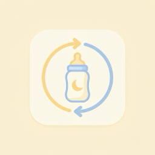
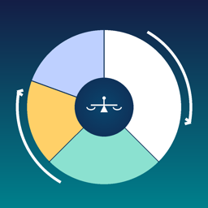
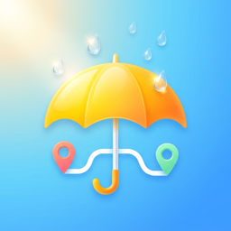
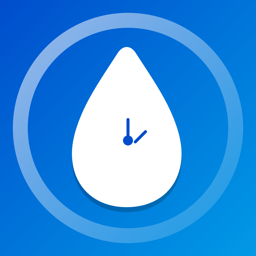
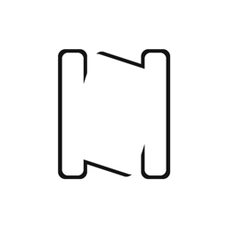
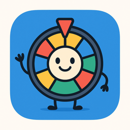
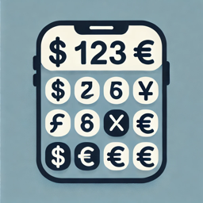

鄭惟臣 Weichen Cheng
做 iOS 十年，7 款 App 在 App Store 上架並維護中。習慣從需求、架構、測試一路做到上架與變現，近期以 Claude Code 搭配自己寫的開發規範工作。
上架作品
全部由我一人設計、開發、測試、上架與維護。App Store 開發者名稱「Weichen Cheng」。

BabySync+
寶寶照護紀錄：餵奶、尿布、睡眠、副食品、生長曲線。Widget 一鍵記錄、動態島計時、家人即時同步、訂閱制 Plus。

WealthPoise
投資組合再平衡：台／美／港／日股票與 ETF、兩種再平衡模式、7 種幣別、淨值月快照、偏離警示、iCloud 同步。
CarSpeedTest
GPS 零百加速計時：起步自動計時、速度曲線、iCloud 同步紀錄。2020 年上架維護至今。

RainWay 通勤知雨
多站點通勤降雨機率與帶傘建議，主畫面與 Widget 一眼看完。無後端、不需 GPS 權限。

Glucose Timer
飯後血糖計時提醒：一鍵開始用餐、自動判斷餐別、兩小時後推播、長按通知直接記錄、紅綠燈日曆。資料只存本機。



開發方式
AI 產出程式與文件，我定規則、驗證與把關。規範寫成 AI 能照做的文件，變更先提案，測試與上架都自動化。
規範寫給 AI 執行
每個專案都有 CLAUDE.md：分支流程、合併條件（可編譯、測試全過、文件更新）、測試規則、程式碼準則。Claude Code 與 Cursor 照著做。
變更先提案再動工
用 OpenSpec 管理變更提案；測試依需求撰寫而不是反推現況，外部依賴全部可注入，覆蓋率目標 90% 以上。
上架也自動化
自訂 Claude Code skills 產生多語系上架文案、截圖與隱私權頁，fastlane 一鍵上傳。最多 7 語系。
工作經歷
百阜科技 · iOS 工程師
- 博弈遊戲 App：iOS 原生端（UIKit / SwiftUI）與 Unity 遊戲內容介接
- 聊天軟體 App、影片播放 App；MVVM / MVVM-C；多品牌版本 App 上架維護
- 在團隊導入 AI 輔助開發；團隊 3~6 人
即準數位科技（MixerBox）· iOS 工程師
- MixerBox 新聞 App：修正 bug、新增功能、固定節奏送審上架；Firebase Crashlytics
希格斯資訊科技 · APP 工程師
- RxSwift + MVVM 實作登入、註冊、充值、提現、交易紀錄與第三方 web game 串接
- 從零建立 CI/CD（Jenkins + fastlane）；導入 SwiftLint 與 Crashlytics
趣遊科技 · 高級工程師
- 建立新博弈 App 的架構（MVVM）並開發，重構既有 App；團隊 3~4 人
昕力／傑亮資訊 · 軟體工程師
- 遠傳健康＋：HealthKit 與 Google Fit 整合、推播、Core Bluetooth 健康裝置串接
- 饕客夯（Facebook SDK、Google Maps SDK）；富邦保單平板工具（Xamarin + C#）
功典資訊 · 軟體工程師（後端）
- 電商行銷分析系統：ASP.NET Web API 2、Quartz.NET、Entity Framework 6、MSSQL、MongoDB
精誠資訊 · 軟體工程師
- 銀行系統與理專財富管理系統（C#、Java）
技能
語言與 UI
Swift（10 年）、SwiftUI、UIKit、Combine、Observation、RxSwift、MVVM / MVVM-C、The Composable ArchitectureApple 框架
SwiftData、Core Data、CloudKit、WidgetKit、ActivityKit、AppIntents、StoreKit 2、WeatherKit、MapKit、Core Location、Core Bluetooth、HealthKit、Swift Charts測試與交付
Swift Testing、XCTest、ViewInspector、依賴注入；fastlane、Jenkins、SwiftLint、SPM、Git；App Store 審核、隱私權標籤、ATT、訂閱服務與其他
Firebase（Auth、Firestore、Storage、Crashlytics）、Google Mobile Ads、Unity 介接；C#、ASP.NET Web API、MSSQL、MongoDB、Xamarin聯絡
歡迎討論 iOS 正職機會或 App 接案。